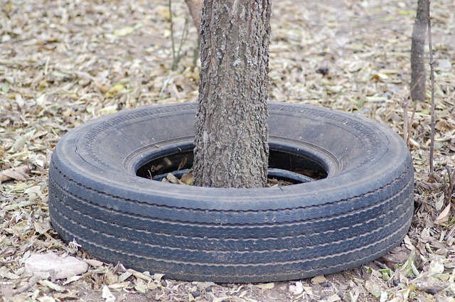

She never liked cleaning the sink. It was beyond her comprehension how it got so dirty so quickly. It seemed that she was forced to clean it every other day. Even when she was extra careful to keep things clean and orderly, it still ended up looking like a mess in a couple of days. What she didn't know was there was a tiny creature living in it that didn't like things neat.
| Firstname | Lastname | Age |
|---|---|---|
| Woman | Doing | Dishes |